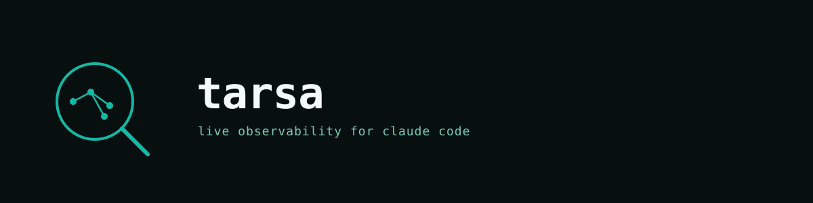

Live observability for Claude Code
- See every agent, tool call, and token — as it happens
- Replay any session deterministically with a drag of the scrubber
- Zero instrumentation: drop a hook, run a command, done
curl -fsSL https://raw.githubusercontent.com/elcronos/tarsa/main/install.sh | shThe only tool that combines all five.
Each differentiator matters. Tarsa is the only tool that delivers all of them together.
Zero-instrument
Hook-based capture with no SDK to install, no proxy to route traffic through, and no MITM layer. Paste one block into your hooks config and you are done.
Time-travel replay
State is derived by running a pure reducer over an append-only event log. Replay to any timestamp deterministically — no snapshots, no guesswork.
Claude Code native
Understands subagent_type, team-* agent markers, depth levels, and iteration counts. Built for Claude Code, not adapted from a generic tracer.
Local-first
No cloud, no telemetry, no signup. A single binary writes to /tmp/tarsa.jsonl on your machine. Your data never leaves your terminal.
Real-time DAG
A live directed-acyclic-graph of your agent topology, with subagent deduplication, color-coded edges, and depth-grid layout updating as events arrive.
langfuse needs an SDK. agentops is cloud. ccusage is post-hoc. claude-trace is HTTP-only. OTel is generic. Tarsa is none of the above.
How Tarsa compares
Feature-by-feature breakdown across popular observability tools for AI agents.
| Tool | Zero-instrument | Hook-based | Time-travel replay | Claude Code native | Local-only | Real-time graph |
|---|---|---|---|---|---|---|
| Tarsa | ✓ | ✓ | ✓ | ✓ | ✓ | ✓ |
| langfuse | ✗ | ✗ | ~ | ✗ | ~ | ~ |
| agentops | ✗ | ✗ | ✗ | ✗ | ✗ | ~ |
| ccusage | ~ | ✗ | ✗ | ~ | ✓ | ✗ |
| claude-trace | ~ | ✗ | ✗ | ~ | ✓ | ✗ |
| OTel | ✗ | ✗ | ✗ | ✗ | ~ | ~ |
Features
Everything you need to understand a multi-agent Claude Code session.
Topology DAG
Directed-acyclic-graph of all agents with depth-grid layout. Color-coded edges distinguish subagent spawns from tool calls, updated live as events stream in.
Timeline Gantt
Parallel-bar grouping with depth indentation shows which agents ran concurrently. Mini-map overview lets you orient quickly across long sessions.
Replay Scrubber
Drag through history to reconstruct exact agent state at any moment. Deterministic state derivation via pure reducer. Full keyboard navigation supported.
Cost Provenance
Per-agent token and cost breakdown with measured-vs-estimated badges. Trace spend back to the exact subagent that incurred it.
Stuck Detection
Agent-type baselines and z-score analysis surface agents that have stalled. Root-cause hints point to the last tool call or pattern that preceded the hang.
Session Diff
Side-by-side comparison of two sessions. Identify regressions, improvements, or behavioral drift between runs on the same prompt.
Install
Choose the method that fits your runtime. All three start the same local server on port 8100.
One-line installer
curl -fsSL https://raw.githubusercontent.com/elcronos/tarsa/main/install.sh | shNode (npx)
npx tarsaBun (bunx)
bunx tarsaHow it works
A straight pipeline from Claude Code hooks to the browser dashboard — no intermediaries.